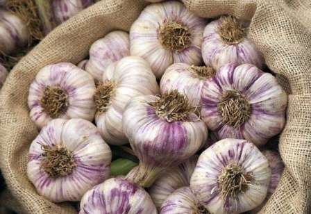

Красота от чеснокаЖирная угреватая кожа досталась Алисе от матери по наследству. Глядя на свою выросшую дочь, Анна Дмитриевна вспоминала молодость и думала: почему все повторяется? Ведь она так и не смогла ничего сделать со своей кожей, которая была для нее причиной постоянных страданий. Из-за этого, возможно, у нее так и не сложилась личная жизнь. Анна стеснялась своего лица, которое всегда было покрыто мелкими прыщиками и угрями. Они то воспалялись, то становились меньше, но никогда не проходили совсем. Она ходила к косметологу, делала маски и другие процедуры, после которых лицо становилось красным и горело и только на несколько дней после процедуры приобретало более-менее сносный вид. Но вскоре все возвращалось на круги своя. Щеки и подбородок покрывались прыщами. Так Анна и жила. Потом вышла замуж за нелюбимого человека, потому что на любимого боялась поднять глаза и он женился на ее подруге. Через год у нее родилась дочь, а затем последовал развод с мужем. Зато к сорока пяти годам кожа у Анны Дмитриевны стала значительно лучше, она сделалась более сухой, исчезли жирные поры и угри. И косметические кабинеты ей уже стали не нужны. Тем более что подросла дочь – Алиса.
Теперь женщина повторяла свой путь вместе с дочерью, водя ее по косметическим салонам и врачам-дерматологам в надежде, что современные методы помогут Алисе. Действительно, у косметологов появилось гораздо больше возможностей воздействовать на кожу, но даже они не избавили шестнадцатилетнюю девушку от прыщей. Специалисты разводили руками и ссылались на возрастные явления, против которых они бессильны. Анна Дмитриевна возмущалась, отвечая, что она и не просит тормозить физическое развитие девушки, а хочет избавить ее от проблем с кожей. Последним средством оставались гормональные препараты, от которых женщина категорически отказалась.
«И правильно сделали, – поддержала ее соседка, – я все болезни и проблемы кожи лечу только чесноком, и ты попробуй. Чеснок и очищает, и дезинфицирует, и силу придает. Поэтому его надо употреблять и внутрь и наружно». И она научила Анну Дмитриевну делать чесночные примочки и чесночные маски и еще дала много кулинарных рецептов с чесноком.
Каждый день мама делала дочке чесночные средства для кожи и не забывала готовить с чесноком различные блюда. А если Алисе не удавалось пообедать дома, то мама давала ей чесночные пилюли. Каждый день Алиса отмечала небольшие улучшения, правда, они были столь незначительные, что были заметны только ей. Однако Алиса верила в успех, а вот мама стала сомневаться в эффективности народного средства. Но на шестой день произошло чудо, которое было заметно уже и Анне Дмитриевне. Кожа на щеках девушки стала ровной и приобрела приятный матовый оттенок. Только в некоторых местах остались небольшие прыщики, которые были почти незаметны. Алиса сияла от счастья, а Анна Дмитриевна с радостью думала о том, что дочь теперь уж точно не повторит ее судьбу. Она будет бороться за свое счастье и непременно найдет его.